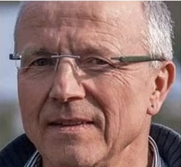

NOBEL PER LA MEDICINA 2026
Hanno trovato
l'interruttore
del cervello.
Karl Deisseroth
Peter Hegemann

Georg Nagel
Foto: The Nobel Assembly, Karolinska Institutet
Tutto grazie a un'alga
che voleva solo stare al sole.